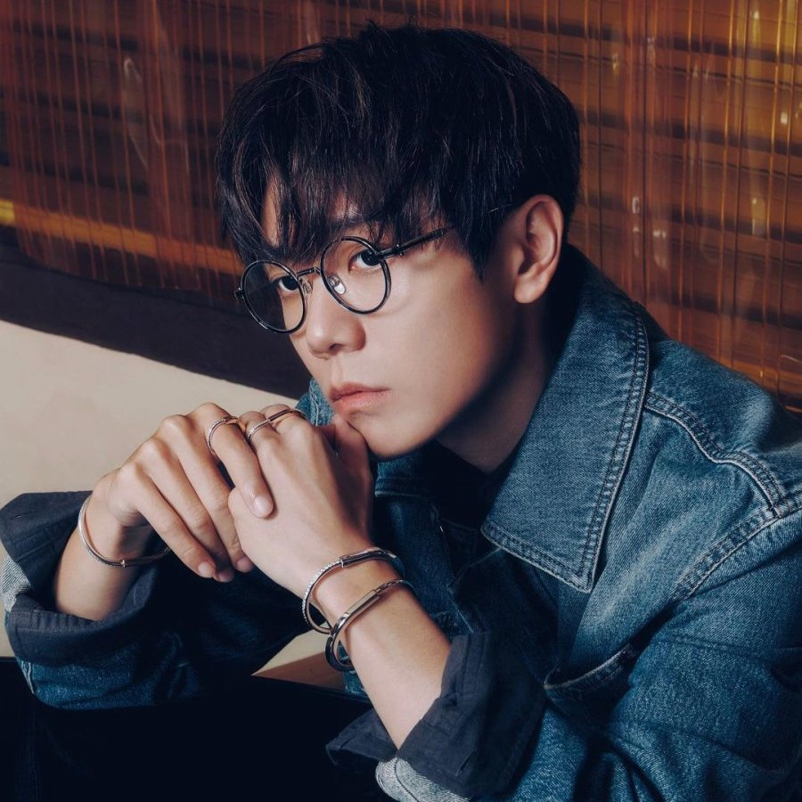

The Next 20
Singapore
This website has some subtext that goes here under the main title. It's a smaller font and the color is lower contrast.

Special Guests

Terence
Taeyong
Kyuhyun
Soohyun
Hins Cheung King-hin, is a Hong Kong singer, songwriter, record producer, chef, and businessperson. He made his debut in 2001 with the studio album Hins' First. He has since released 17 studio albums and EPs
-Wikipedia, 2024
Call to action! It's time!
Become a wife of Hins Cheung by clicking that button right now!